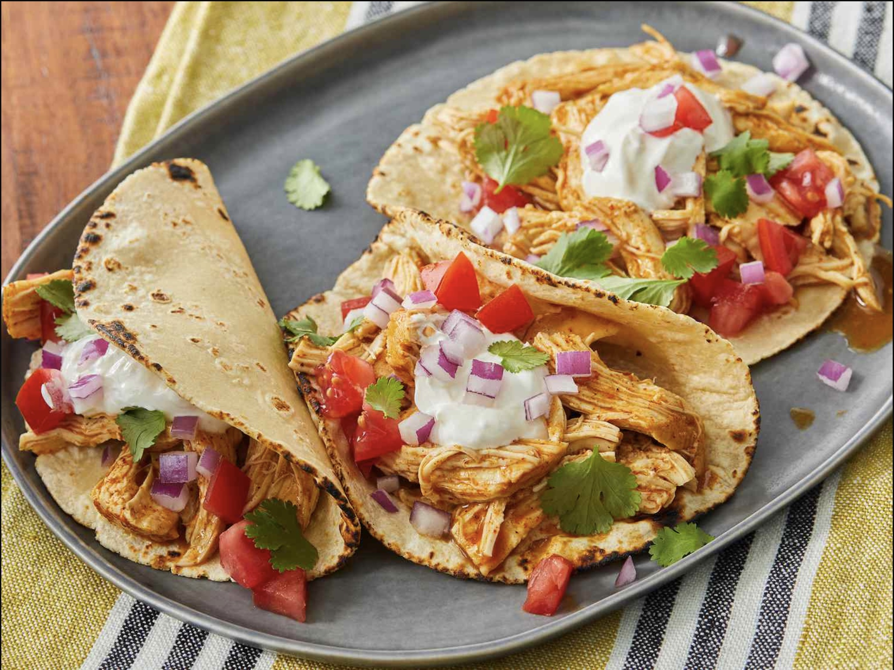

Shredded Chicken Tacos

Tacos... juicy slow cooker shredded chicken tacos
- 1 cup chicken broth
- 3 Tbsp taco seasoning mix
- 1 pound skinless, boneless chicken breast
Steps
- combine chicken broth and taco seasoning mix in a bow
-
place chicken in a slow cooker and pour chicken broth mixture over
chicken
- cook on low for 6 to 8 hours
- shred chicken and make dem tacos